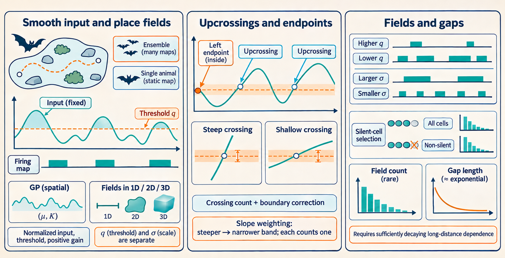
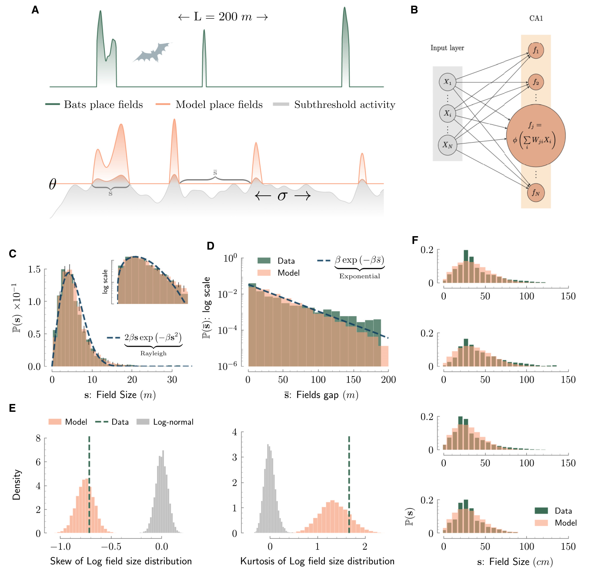
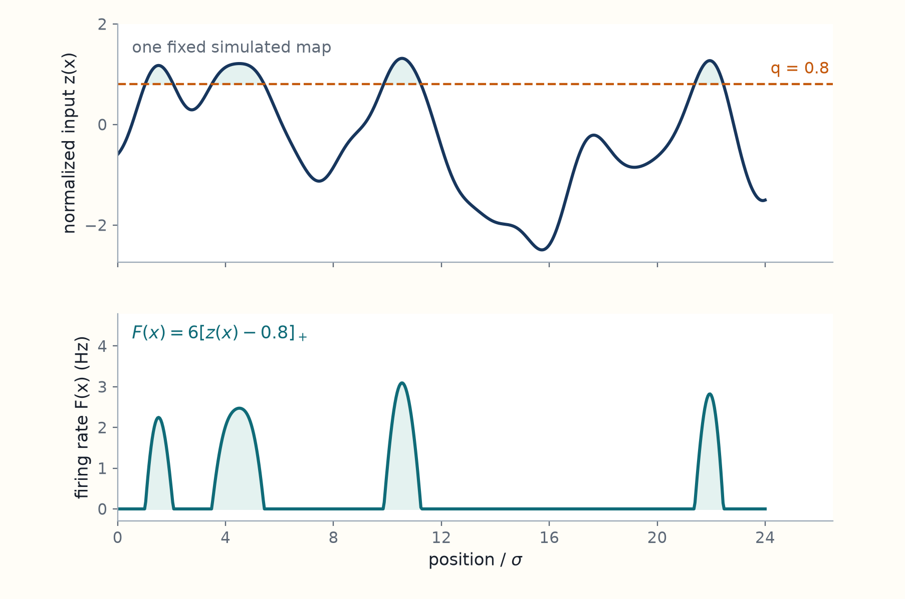
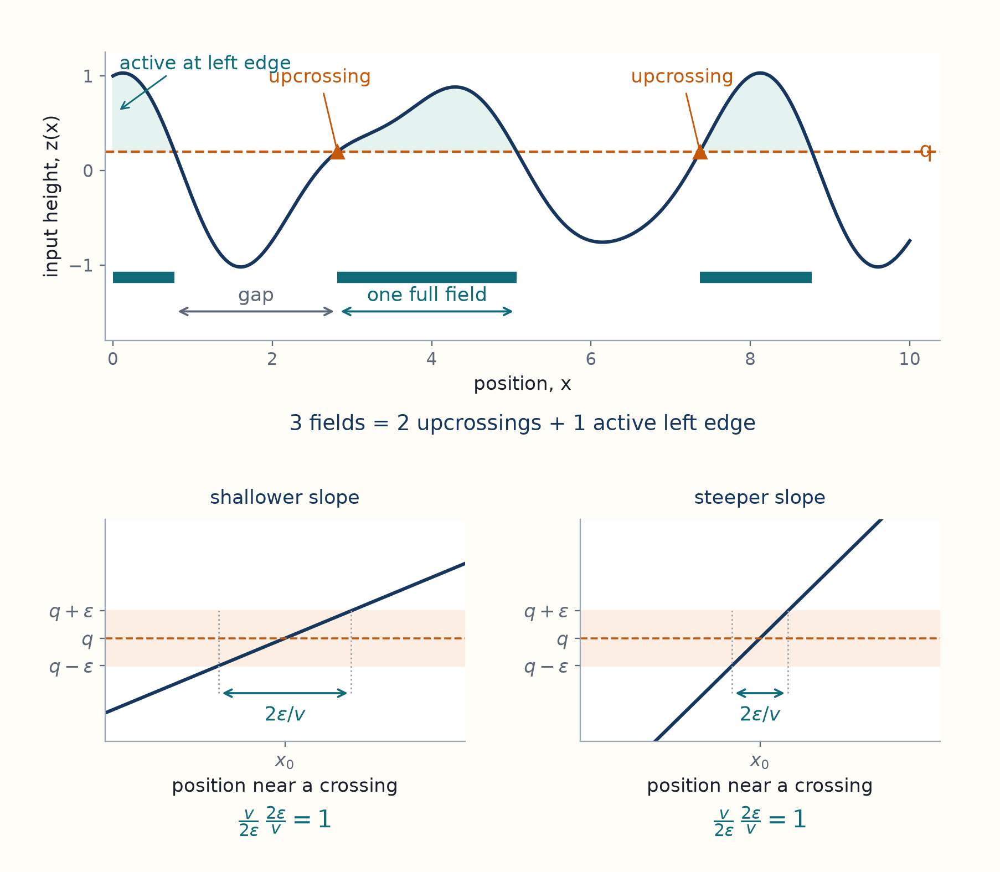

10 Field counts and gaps reveal threshold and scale
Hippocampal place cells fire more at particular locations as an animal moves. This chapter introduces the rodent and bat recordings, then shows how a smooth random input that exceeds a firing threshold can produce several separate active regions for one cell.
The study compares recordings of hippocampal place cells from bats flying through tunnels, rats moving over an arena floor, and bats flying through a room. For tunnel flights, the analysis uses distance along an approximately one-dimensional route, although the tunnel itself has width and height. The floor map uses two position coordinates, and the room map uses three.
A cell recorded on a short track may have one smooth firing hill. On a long track, the same kind of cell may have several separated fields, each with a different width and height. In a room, its active regions can bend, split, and surround inactive holes. How could one model produce this variety and still make useful predictions?
Mainali, Azeredo da Silveira, and Burak propose that a cell’s spatial input is a smooth random function. This function can be interpreted as the average combined input arriving through the cell’s synapses at each animal position. The model cell has positive firing rate where this input exceeds a threshold. The recordings estimate firing rates rather than measuring this input directly.1 The model predicts distributions of field lengths, areas, and volumes, rather than the location of a particular cell’s next field. Its strongest tests check whether fitting field sizes and counts also explains field shapes and holes.2
The paper writes this threshold rule as a rectified input (STAR Methods, Eq. 3). In the notation used here it is
\[ F(x)=a\,[z(x)-q]_+,\qquad [u]_+=\max(u,0). \]
Here \(x\) is the animal’s position, \(z(x)\) is the mean-centered input divided by its standard deviation, \(q\) is the threshold in those standard-deviation units, \(F(x)\) is the predicted firing rate, and \(a>0\) sets its scale. Thus the cell is active where \(z(x)>q\).
[Guide development: the threshold rule] Let the input before centering be \(H(x)\), with constant mean \(\mu\) and standard deviation \(\sigma_h>0\). If the cell’s response is modeled as \(F(x)=G[H(x)-H_{\rm th}]_+\) for a positive gain \(G\) and input threshold \(H_{\rm th}\), define
\[ z(x)=\frac{H(x)-\mu}{\sigma_h},\qquad q=\frac{H_{\rm th}-\mu}{\sigma_h},\qquad a=G\sigma_h. \]
Since \(H(x)-H_{\rm th}=\sigma_h[z(x)-q]\) and \(\sigma_h>0\), substituting gives \(F(x)=a[z(x)-q]_+\). This is a change of units within the paper’s model: it does not derive thresholded firing from the animal recordings. The following section states the Gaussian-map and smoothness assumptions.
We begin on a track, where a field starts at an upcrossing, a point where the input crosses upward through the threshold. Counting these crossings gives the average number of fields. Combining that count with the lengths of active fields and inactive gaps then separates the effect of the threshold from the distance over which the map changes. These calculations establish the parameters needed for the later predictions of sizes and shapes.
Spatial randomness here describes different possible rate maps. Once a map is drawn, it is fixed while the animal moves through it. The spatial coordinate is not time, and the model does not by itself describe memory drift, spike timing, or learning.
Unreviewed draft diagrams. These AI-generated overviews may contain incorrect labels, arrows, formulas, or numbers. Use the chapter text and cited papers for the scientific claims.

10.1 Thresholding a smooth Gaussian input produces place fields
The random-field introduction establishes the fixed-map meaning and covariance assumptions. Its input standard deviation \(\sigma_0\) is written \(\sigma_h\) here, and its local distance scale \(\ell_c\) is written \(\sigma\).
To predict a field’s width, we need to relate activity at nearby positions. A histogram of firing rates alone loses that information: rearranging its values could turn one broad field into many tiny fields without changing the histogram.
The model assigns an input \(h(x)\) to each position \(x\), with nearby values linked so that a cell can have a continuous active region. A Gaussian process specifies a distribution of maps such that the values at any finite set of positions form a jointly Gaussian random vector. A jointly Gaussian vector is one for which every linear combination of its entries is Gaussian. This joint rule constrains how inputs at different positions can vary together, beyond requiring a Gaussian histogram at each position.
The mean sets the average input, and the spatial covariance describes how inputs at two positions vary together across possible maps. These functions determine the joint Gaussian laws. The chosen covariance must also make the maps smooth enough for the derivatives used below. After a map is drawn, moving the animal changes which position is evaluated, not the map itself.
Mathematical definitions: Gaussian processes and spatial covariance
For chosen positions \(x_1,\ldots,x_n\), the input vector is \((h(x_1),\ldots,h(x_n))\). Its mean vector and covariance matrix are obtained by evaluating two functions,
\[ m(x)=\mathbb E[h(x)],\qquad C(x,y)=\mathbb E[(h(x)-m(x))(h(y)-m(y))]. \]
The expectation runs over possible maps, or over cells assumed to share these statistics. For jointly Gaussian vectors, zero covariance between two subvectors implies their independence. That extra property, which does not hold for general distributions, will simplify the crossing calculation. The values after thresholding will generally not have a Gaussian distribution.3
Three assumptions have different jobs:
- Stationarity means that moving the observation window does not change the map’s probability law. Here it gives a constant mean and a covariance \(C(x,y)=C(y-x)\) that depends on separation. It does not say that a particular map is flat.
- Isotropy means that rotating the separation does not change the covariance: in several dimensions, \(C(\Delta x)\) depends only on \(\|\Delta x\|\). It rules out a preferred direction in the model’s statistics. Stationarity alone does not imply isotropy.
- Smoothness controls whether the map has well defined spatial derivatives. Crossing calculations require differentiable sample functions and nondegenerate joint distributions: the relevant vector of heights and derivatives must have an invertible covariance matrix, rather than obey an exact linear constraint. Peak calculations require second derivatives and enough regularity to control their local approximation.
A Gaussian distribution of values does not guarantee this smoothness. For example, a covariance proportional to \(e^{-|x-y|/b}\) has a sharp corner at zero separation and does not supply the differentiable paths assumed below.
Set the mean to zero and write \(\sigma_h^2=C(0)\) for input variance. A constant input mean can be absorbed into the threshold. It is useful to normalize the input,
\[ z(x)=\frac{h(x)}{\sigma_h},\qquad F(x)=a\,[z(x)-q]_+, \quad [u]_+=\max(u,0). \]
Here \(z\) has variance one, \(q\) is a dimensionless threshold, and \(a>0\) converts normalized input to firing rate, in Hz. The paper writes \(\theta\) for \(q\), \(r\) for covariance, and \(D\) for spatial dimension. This guide uses \(q,C,d\) to avoid conflicts with earlier chapters. The original input threshold is \(q\sigma_h\). In the paper’s Equation 3 the firing rate is proportional to \([h-q\sigma_h]_+\), which is equivalent to this form after choosing the gain.4
The input threshold summarizes how much combined input is needed before the model cell fires. It can reflect the cell’s own response properties and inhibitory input. Raising \(q\) at a fixed input map leaves fewer positions active. If the absolute threshold above the input mean is positive and held fixed, increasing the input standard deviation \(\sigma_h\) lowers \(q\), making activity more widespread. Changing \(a\) instead changes rates within active regions while preserving their zero-rate boundaries. A fixed positive detection cutoff in Hz would change this last conclusion. A fitted threshold describes the balance of input and response. It does not identify which biological quantity changed.
Original paper figure: Mainali, Azeredo da Silveira, and Burak (2025), Figure 1


The excursion set above \(q\) is
\[ A_q=\{x:z(x)>q\}. \]
Each connected piece of \(A_q\) is a model place field. In one dimension its size is length. In two and three dimensions it is area and volume. Two nearby peaks belong to one field if an above-threshold path joins them. Counting peaks and counting fields therefore answer different questions.
For a one dimensional stationary process, differentiation of covariance gives
\[ \operatorname{Var}(h')= \left.\partial_x\partial_y C(y-x)\right|_{y=x}=-C''(0). \]
The minus sign comes from differentiating \(y-x\) once with respect to each variable. The paper defines the spatial scale
\[ \sigma=\sqrt{-\frac{C(0)}{C''(0)}}; \qquad \operatorname{Var}(z')=\frac{1}{\sigma^2}. \]
Thus \(\sigma\) compares typical height with typical slope and has units of distance. In an isotropic field, the same definition applies along any unit direction. For the smooth Gaussian covariance \(C(\Delta x)=\sigma_h^2\exp[-\|\Delta x\|^2/(2\sigma^2)]\), it is exactly the parameter in that exponent. The paper uses a Gaussian covariance for its simulations. Other smooth covariances can share this local scale while having different longer distance structure.5
A simulated Gaussian input map with covariance \(C(\Delta x)=\exp[-(\Delta x/\sigma)^2/2]\) gives the firing map below when \(q=0.8\) and \(a=6\) Hz. Position is shown in units of \(\sigma\).

Thresholding changes the distribution of values and can separate one smooth input curve into several fields. Both panels describe the same fixed map over space, so neither curve is a trajectory over time. See Gaussian input and firing rate, STAR Methods Eqs. 2–3, p. e1.
10.2 Upcrossings count fields, with an endpoint correction
A field starts at an upcrossing, so its expected count can be found by counting upward passages through the threshold. A small interval around each crossing has a width determined by its slope. This lets us count crossings without locating every root.
For the paper’s smooth stationary Gaussian model, the predicted mean number of upcrossings per unit distance is
\[ \nu_+(q)=\frac{e^{-q^2/2}}{2\pi\sigma}. \]
Here \(q\) is the normalized threshold and \(\sigma\) is the spatial scale defined above. On a long track, this is also the mean field count per unit length. A finite track needs the endpoint correction derived below. This is the Kac–Rice result used in Supplemental Methods S3; it does not require the high-threshold approximation.
Consider a differentiable fixed curve and a simple upward crossing \(x_0\) of \(q\), with slope \(v=z'(x_0)>0\). Close to the crossing,
\[ z(x)-q\simeq v(x-x_0). \]
The curve lies in the vertical band \(|z-q|<\varepsilon\) for a spatial distance approximately \(2\varepsilon/v\). Integrating \(z'(x)/(2\varepsilon)\) over that interval contributes one. Restricting to positive slopes counts only upward crossings. Under the usual regularity conditions, averaging this counting identity gives the Kac–Rice formula for the mean upcrossing density,
\[ \nu_+(q)=\int_0^\infty v\,p_{z,z'}(q,v)\,dv. \]
The density \(p_{z,z'}(q,v)\) describes how often height is near \(q\) and slope near \(v\). Multiplication by \(v\) compensates for the shorter spatial window of a steep crossing. Multiplying the probability of being above threshold by a typical slope would miss this weighting.6
We can evaluate the integral because height and slope are independent here. Stationarity gives
\[ \mathbb E[zz']=\frac12\frac{d}{dx}\mathbb E[z(x)^2]=0. \]
Height and slope are jointly Gaussian. Zero covariance therefore makes them independent. Their distributions are \(z\sim\mathcal N(0,1)\) and \(z'\sim\mathcal N(0,\sigma^{-2})\). Consequently,
\[ \begin{aligned} \nu_+(q) &=\frac{e^{-q^2/2}}{\sqrt{2\pi}} \int_0^\infty v\frac{\sigma}{\sqrt{2\pi}} e^{-\sigma^2v^2/2}\,dv\\ &=\frac{e^{-q^2/2}}{\sqrt{2\pi}} \frac{1}{\sigma\sqrt{2\pi}} =\frac{e^{-q^2/2}}{2\pi\sigma}. \end{aligned} \]
In the integral, use \(u=\sigma^2v^2/2\), so \(v\,dv=du/\sigma^2\). This result is exact for the stated smooth stationary Gaussian model. A high threshold is not needed. Its units are inverse distance: increasing \(\sigma\) stretches the map and reduces crossings per metre.
A fixed smooth curve shows how to count a field already active at the left edge and why the crossing integral weights each slope.

The count includes every connected active interval intersecting the track. Discarding clipped boundary fields would change this convention.
On a finite track \([0,L]\), each upcrossing starts a field, but a field may already be active at the left endpoint. If \(N_L\) counts all components intersecting the track, then, under regularity conditions that exclude tangencies and give nonzero slopes at crossings,
\[ N_L=N_+(q;[0,L])+\mathbf1\{z(0)>q\}, \qquad \mathbb E[N_L]=L\nu_+(q)+Q(q), \]
Here \(N_+(q;[0,L])\) counts upward crossings within the track, and \(\mathbf1\{z(0)>q\}\) equals one if the left endpoint is active and zero otherwise. The probability \(Q(q)=1-\Phi(q)\) uses the standard normal cumulative distribution function \(\Phi\). The last term is the endpoint correction. Removing incomplete boundary fields changes the counting convention, so the same correction cannot then be used unchanged. This identity also gives the paper’s exact one dimensional mean Euler characteristic, Equation 8. In one dimension, the Euler characteristic is the number of connected active intervals, so it is the field count used here. The later topology chapter extends this count to maps with holes.7
10.3 Mean field and gap lengths separate threshold from scale
A low field count can result from a high threshold or a slowly varying map. Field lengths help separate those possibilities.
At a uniformly chosen position, the probability of activity is \(Q(q)\). Here \(q\) is the normalized threshold and \(Q(q)=1-\Phi(q)\) is the chance that a standard normal value exceeds it. Hence a track of length \(L\) has expected occupied length \(LQ(q)\). On a long stationary track, the average occupied length per field is the occupied length per unit distance divided by the number of fields per unit distance. Write \(\mu_s\) for mean active-field length, \(\mu_g\) for mean inactive-gap length, and \(\nu_+(q)\) for the mean number of upcrossings per unit distance. The corresponding gap calculation uses the inactive fraction \(\Phi(q)\):
\[ \begin{aligned} \mu_s&=\frac{Q(q)}{\nu_+(q)} =2\pi\sigma Q(q)e^{q^2/2},\\ \mu_g&=\frac{\Phi(q)}{\nu_+(q)} =2\pi\sigma\Phi(q)e^{q^2/2}. \end{aligned} \]
These are stationary per-field and per-gap means, ignoring clipping at track boundaries. They are not an assertion that the expectation of a finite sample’s ratio equals the ratio of its expectations. Subject to suitable averaging over a long track or many maps, they give the inference rule in Methods S3, Equations S14–S15.8
Adding and dividing removes one unknown at a time:
\[ \mu_s+\mu_g=2\pi\sigma e^{q^2/2},\qquad \frac{\mu_s}{\mu_s+\mu_g}=Q(q). \]
Thus
\[ q=\Phi^{-1}\!\left(\frac{\mu_g}{\mu_s+\mu_g}\right), \qquad \sigma=\frac{\mu_s+\mu_g}{2\pi}e^{-q^2/2}. \]
For example, \(q=1.1\) and \(\sigma=2.4\) m, the fitted parameters reported for the 200 m bat tunnel, give \(Q(q)=0.1357\), \(\nu_+=0.03621\) per metre, \(\mu_s=3.746\) m, and \(\mu_g=23.868\) m in the continuous model. Putting these two means into the inversion recovers \(q=1.1\) and \(\sigma=2.4\) m. The expected number of intersecting fields on a 200 m track is \(7.2425+0.1357=7.3782\), including the left endpoint term. These are calculations from the fitted model, not fresh estimates from raw recordings.
The means do not imply a full gap or count distribution. At high thresholds, distant rare excursions can approach independent events if correlations decay sufficiently with distance. In that regime, field locations approach a Poisson process, counts in a long interval are approximately Poisson, and gaps are approximately exponential. Smoothness and stationarity alone do not ensure this independence. A periodic Gaussian process, for example, retains long distance dependence. Upward and downward crossings that enclose the same small field remain strongly related even when fields far apart are almost independent.
Experimental selection also matters. If cells with no fields are excluded, let \(N\) be a cell’s number of fields, \(n\) a possible count, and \(\lambda\) the unconditioned mean count. A Poisson model then gives
\[ \Pr(N=n\mid N\ge1)= \frac{e^{-\lambda}\lambda^n}{n!(1-e^{-\lambda})},\quad n\ge1, \qquad \mathbb E[N\mid N\ge1]=\frac{\lambda}{1-e^{-\lambda}}. \]
The mean follows because the omitted \(n=0\) term contributes zero to \(\sum n\Pr(N=n)=\lambda\), while conditioning divides all remaining probabilities by \(1-e^{-\lambda}\). For \(\lambda=1\), \(36.8\%\) of cells are excluded and the observed mean is \(1.582\), not one. Using \(1.582\) as the unconditioned mean would infer too many fields. The paper applies this correction to its two dimensional count fit, Equation 5.9
Mainali et al. (2025), Universal statistics of hippocampal place fields across species and dimensionalities, Neuron, 113, 1110–1120.e3, doi:10.1016/j.neuron.2025.01.017, STAR Methods, Equations 2–3, p. e1; Supplemental Methods S1, p. 8.↩︎
Mainali, N., Azeredo da Silveira, R., & Burak, Y. (2025). Universal statistics of hippocampal place fields across species and dimensionalities. Neuron, 113, 1110–1120.e3. DOI, Introduction and Results, pp. 1110–1111; Figure 1. ↩︎
Mainali et al. (2025), Universal statistics of hippocampal place fields across species and dimensionalities, Neuron, 113, 1110–1120.e3, doi:10.1016/j.neuron.2025.01.017, STAR Methods, Equations 2–3, p. e1; Supplemental Methods S1, p. 8.↩︎
Mainali et al. (2025), Universal statistics of hippocampal place fields across species and dimensionalities, Neuron, 113, 1110–1120.e3, doi:10.1016/j.neuron.2025.01.017, STAR Methods, Equations 2–3, p. e1; Supplemental Methods S1, p. 8.↩︎
Mainali et al. (2025), Universal statistics of hippocampal place fields across species and dimensionalities, Neuron, 113, 1110–1120.e3, doi:10.1016/j.neuron.2025.01.017, STAR Methods, Equation 4, p. e2; Supplemental Methods S3, Equations S10–S11. The derivative calculation here is expanded for teaching. ↩︎
Mainali et al. (2025), Universal statistics of hippocampal place fields across species and dimensionalities, Neuron, 113, 1110–1120.e3, doi:10.1016/j.neuron.2025.01.017, Supplemental Methods S3, Equations S9–S13, pp. 10–11. The narrow-band upcrossing argument is a reconstruction. See also Mainali, N. (2026, August 6), Mathematical properties of Gaussian process neural code: Excursion geometry, spectral structure, and coding error, author teaching notes, “The Kac-Rice formula” and “Expected crossing count”. ↩︎
Mainali et al. (2025), Universal statistics of hippocampal place fields across species and dimensionalities, Neuron, 113, 1110–1120.e3, doi:10.1016/j.neuron.2025.01.017, Figure 3F–H; STAR Methods, “Euler characteristics,” Equations 8–10, p. e3. ↩︎
Mainali et al. (2025), Universal statistics of hippocampal place fields across species and dimensionalities, Neuron, 113, 1110–1120.e3, doi:10.1016/j.neuron.2025.01.017, Supplemental Methods S3, Equations S14–S15; STAR Methods, “Parameter inference in 1D environments.” The explicit inversion is derived here. ↩︎
Mainali et al. (2025), Universal statistics of hippocampal place fields across species and dimensionalities, Neuron, 113, 1110–1120.e3, doi:10.1016/j.neuron.2025.01.017, STAR Methods, Equation 5 and “Parameter inference in 2D environments,” p. e2. ↩︎